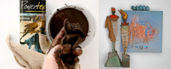
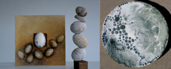
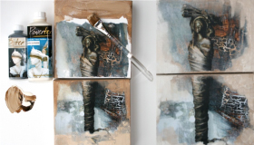

Poweretexは吸水性のある物質はほぼすべて硬化させられるベルギー発祥のペイント素材であり、その素材を用いて作られる作品の総称です。2013年、アジアで初めて日本に入荷されました。
環境や人体に影響の出ないオーガニック素材で作られており、乾燥後は防水性を持ちます。また、Powertexでは古くなったTシャツや、いらなくなったレースをリメイクできます。お家に眠っている物たちが、Powertexにとっては貴重な素材となるのです。
またPowertexで表される色合いは非常に特徴的で、立体的な絵画としても楽しまれています。
ベルギー・オランダを中心にすでに約27カ国で楽しまれており、ベルギーでは一部の小学校、オランダでは医療セラピーとしても活躍しており、マインドフルネスの効果もあります。
オブジェや絵、アクセサリー、家具の加工など趣味の世界からアート作品に至るまで、創造の更なる可能性を広げるものとして、どのような世代でも気軽に自由に始められます。
REACH（Registration, Evaluation, Authorization and Restriction of Chemicals、リーチ, リーチ法）とは、欧州連合における人の健康や環境の保護のために化学物質とその安全な使用・取扱・用途(Use)に関する新しい欧州連合(EU)の法律です。

Stone art とは紙を利用し作られた粉末状の素材です。Stone art とPowertexを組み合わせることによりまるで石のような加工が可能となります。また二つを混ぜよく練ることにより粘土のような素材にもなり、自由に形を作り上げられるので、それを利用して器や花瓶を作ることができます。Stone artは見た目は石にもかかわらず大変軽い素材なため、アクセサリーやピアスを作る上でも大変重宝します。

レザープリントをした写真を絵のように貼り付けられます。子供の写真を張り付けた上に、Powertexを利用し履けなくなった靴下などを張り付け思い出を形にしたり、オブジェとして飾ることも可能です。プレゼントとしても大変喜ばれます。
また、お店の名前を入れたこの世に一つしかない自前の看板も作ることができます。
